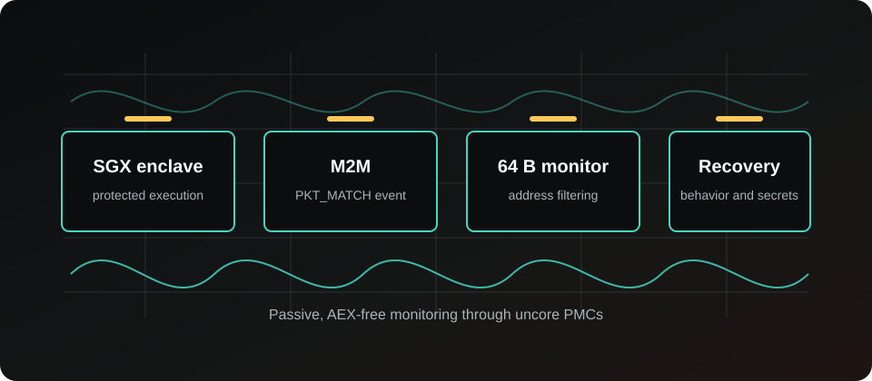
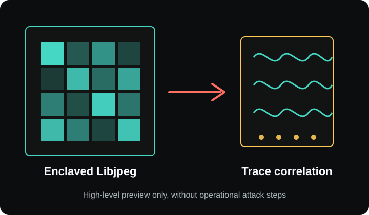
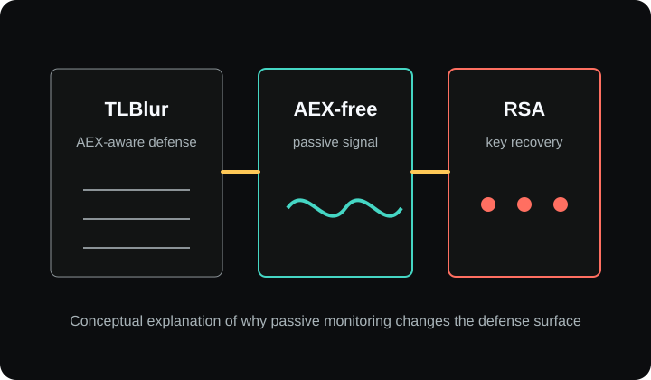

Core PMCs are not the whole story
SGX suppresses sensitive core events, but modern processors also expose uncore monitoring domains outside individual cores.
Security research
AEX-free, High-Resolution, and Low-Noise Side-Channel Attacks on SGX Enclaved Execution.
UncoreBleed shows that while SGX suppresses sensitive core PMCs, uncore performance monitoring can still expose enclave-correlated memory behavior.

Prior work and common assumptions focus on sensitive core PMCs being suppressed during SGX execution. UncoreBleed revisits that boundary and shows that uncore PMCs remain active and can record events correlated with enclave execution.
SGX suppresses sensitive core events, but modern processors also expose uncore monitoring domains outside individual cores.
Production-mode SGX enclave execution can still correlate with uncore performance events in shared memory subsystems.
The M2M PKT_MATCH event enables address-based monitoring at 64 B granularity, reducing unrelated memory activity.
The attack is presented here as a conceptual research pipeline. The public page intentionally avoids operational exploit instructions and private release material.

Case study 01
At 64 B granularity, UncoreBleed can distinguish sensitive paths within the same code page and correlate monitored memory behavior with image reconstruction.

Case study 02
The paper demonstrates RSA private-key recovery from a single decryption even with TLBlur and AEX-Notify deployed, because the monitoring path is passive and AEX-free.
Sensitive core PMCs stop accumulating during enclave execution, but uncore PMCs can remain active.
The M2M subsystem supports programmable address filtering that can focus observation on selected memory traffic.
The primitive distinguishes monitored memory blocks at cache-line scale rather than coarse page scale.
Physical address-to-M2M mapping enables multiple sensitive paths to be monitored across M2M PMON boxes.
UncoreBleed does not rely on triggering asynchronous enclave exits, which changes the defense surface.
The findings motivate reevaluating uncore monitoring access in systems that rely on enclave confidentiality.
@misc{chen2026uncorebleed,
title = {UncoreBleed: AEX-free, High-Resolution, and Low-Noise Side-Channel Attacks on SGX Enclaved Execution},
author = {Chen, Decheng and Zhang, Zhi and Zhang, Zhenkai and Zhang, Xin and Gao, Yansong and Zou, Yi},
year = {2026},
note = {Research paper}
}
Intel SGX is a trusted execution environment that isolates enclave code and data from privileged software such as the operating system and hypervisor.
Performance monitoring counters record hardware events. They are useful for profiling, but some events can become side channels when they correlate with secret-dependent execution.
Core PMCs monitor events close to CPU cores. Uncore PMCs monitor shared processor subsystems such as LLC slices, mesh interconnects, M2M bridges, memory controllers, and I/O components.
It means the attack does not rely on causing asynchronous enclave exits. This makes it different from attacks that use page faults or interrupts to observe chosen execution points.
64 B is cache-line scale. Monitoring at this granularity can distinguish fine-grained behavior that page-level channels may merge together.
The paper evaluates SGX-capable Xeon server platforms and specific uncore monitoring behavior. Public claims should stay within those assumptions and measurements.
TLBlur with AEX-Notify targets attacks that leverage AEX-driven observation. UncoreBleed is passive and AEX-free, so it remains outside that defense focus.
The findings motivate reevaluating access to uncore performance monitoring and its interaction with confidential-computing assumptions.